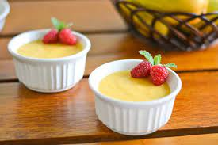

Simple Mango Pudding

Description
Mango pudding is a popular dessert in Asian countries. This simple
mango dessert is so easy to make yet extremely smooth and tasty.
Ingredients
- 1 cup hot water
- 1 cup white sugar
- 1 teaspoon salt
- 2 (.25 ounce) packages powdered gelatin (such as Knox®)
- 26 ounces canned mango pulp
- 1 ½ cups evaporated milk
- 1 cup cold water
- Strawberry (Optional)
Steps
- Combine hot water, sugar, and powdered gelatin in a small bowl; stir until sugar and gelatin are dissolved.
- Mix mango pulp, evaporated milk, and cold water together in a large bowl. Pour in hot water mixture and stir well.
- Refrigerate until set, at least 4 hours.